Aventurine (WIP)
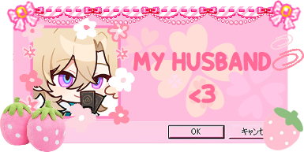 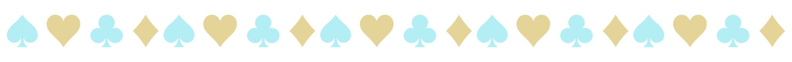 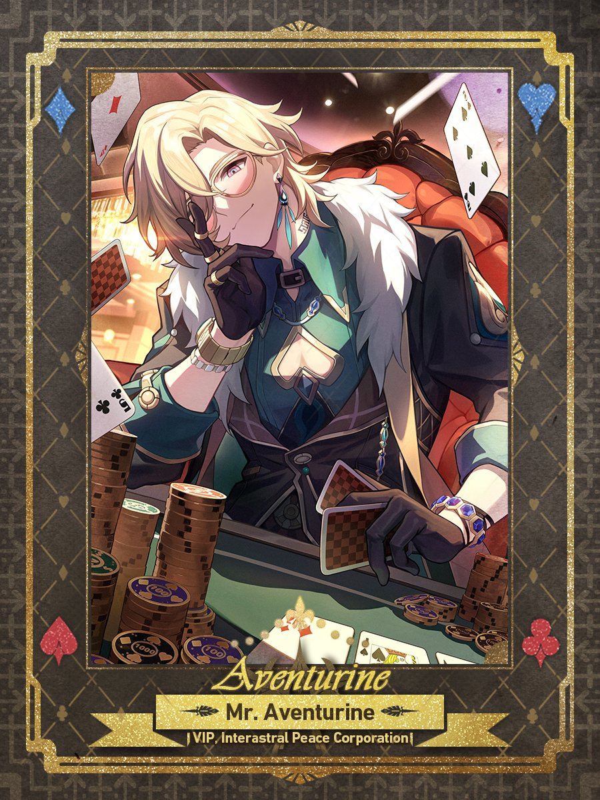Aventurine is a character from Honkai: Star Rail. He's one of the Ten Stonehearts, a group within the Interastral Peace Corporation (IPC), and his stone is the "Aventurine of Stratagems." His voice was revealed in the 1.4 chapter Jolted Awake From a Winter Dream, and he was fully introduced in version 2.0 as a guest invited to Penacony's Charmony Festival. As a playable character, he is a 5-star Imaginary-type Preservation unit. His real name is Kakavasha.
Light Cones
Aventurine is the featured character in two light cones, and he makes cameos in two more!
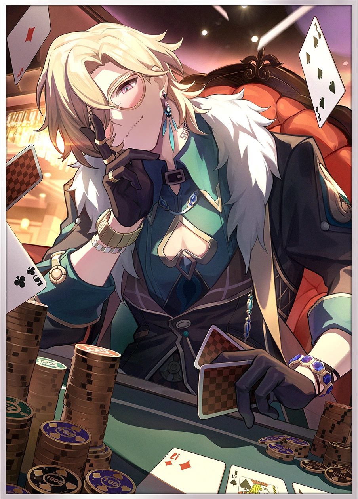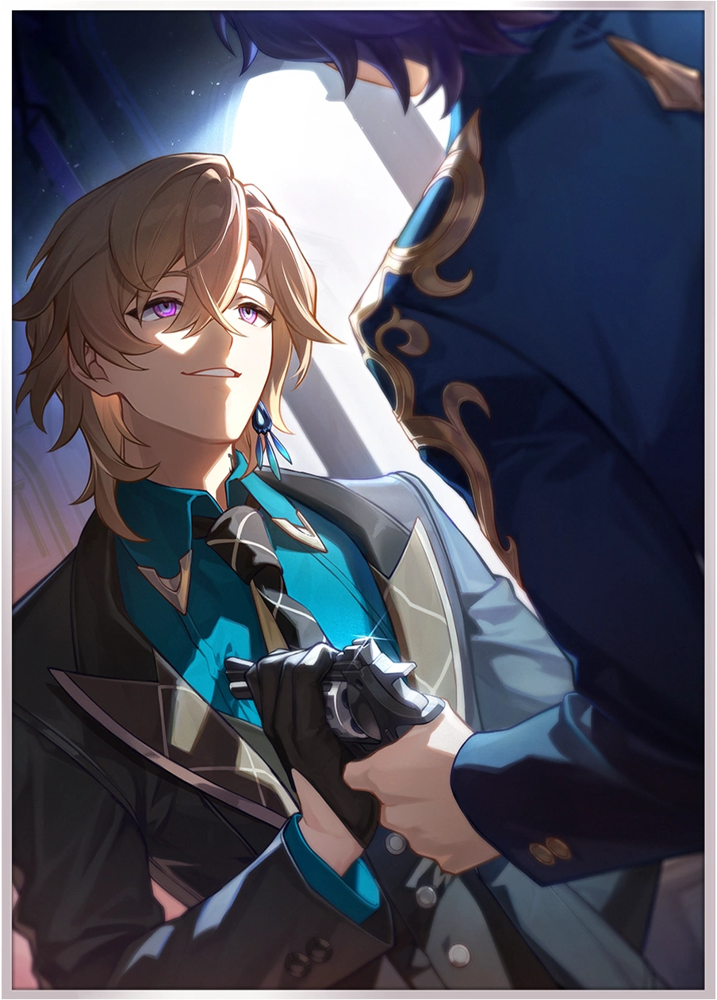 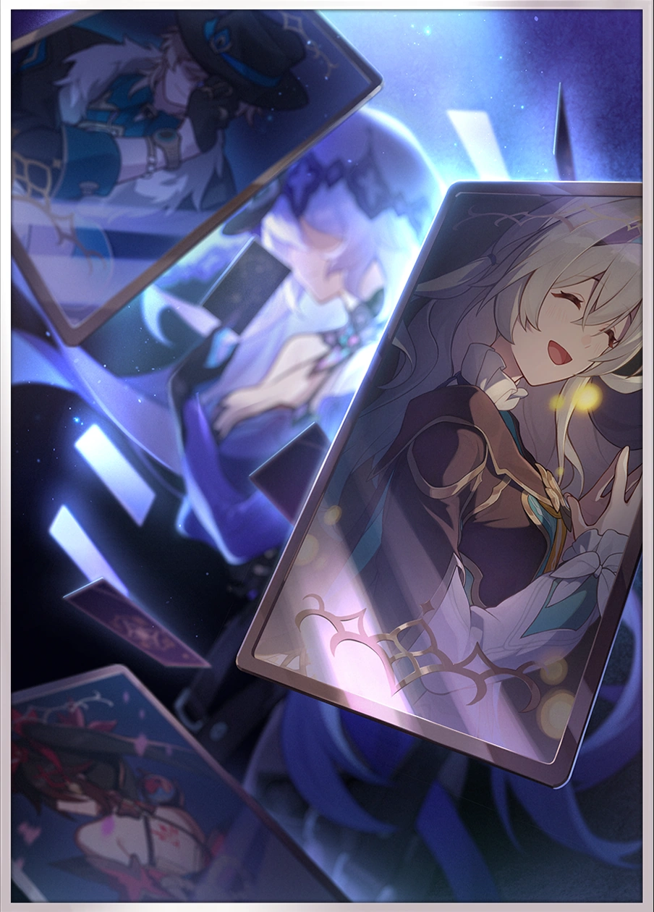
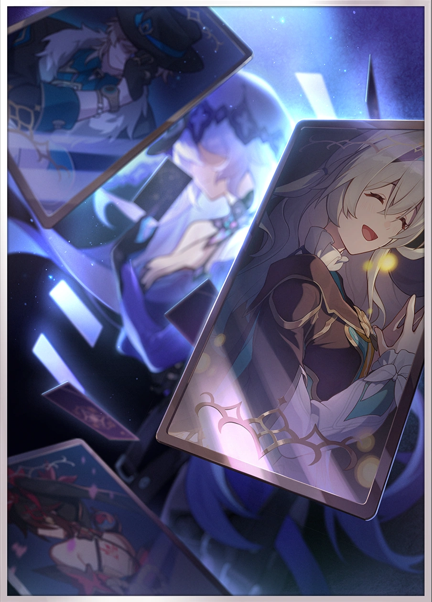
Personal Feelings
It wasn't quite love at first sight, but I liked him since quite early on. I saw leaked images of his design and thought he looked pretty cool, though very similar to Kaoru (lol). It wasn't until someone posted the Final Victor light cone that I was really captivated by him, and I don't know what that says about me, but I've heard it's not an uncommon experience among Aventurine fans! Ever since that day, I've been trying to get to know him as much as possible. I replayed the phone call between him and Topaz countless times trying to analyze it for little details, and I kept a counter of how long I'd been waiting for him to be playable (several months since late 2023!). At that point, no other HSR character had quite captured my attention in this way, so I got a little obsessed with him. I think he's such an interesting character with a lovely design, and his story revealed in 2.1 compelled me on a very deep level. I still get really emotional if I think about him too hard. I love Aventurine he makes me so happy!!
I have him at E1S1 with no current plans to upgrade him further. Though part of me wishes for more copies of him, I value getting new characters more, and it makes me happy enough to run around as him and take pretty photos of him. His relics are great though!
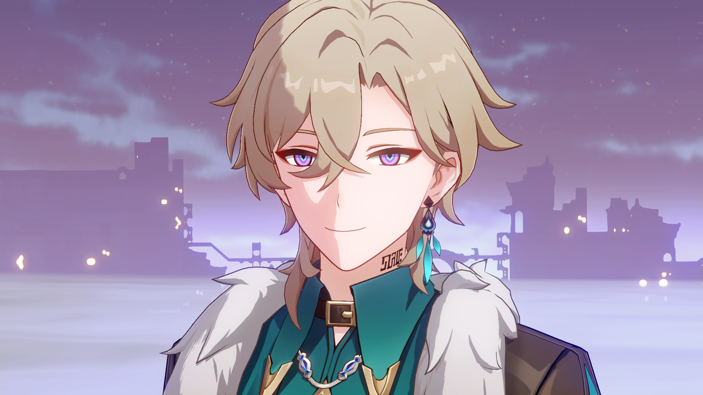Stickers

 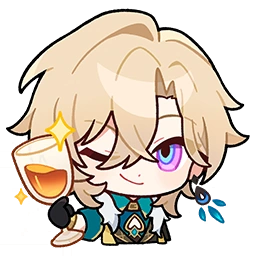
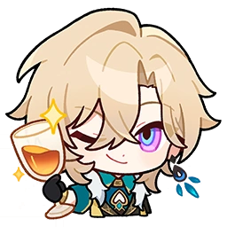
 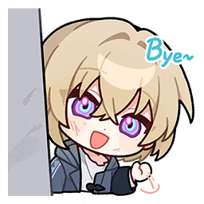
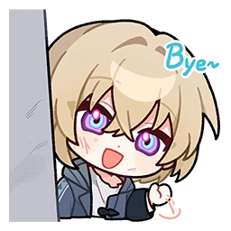
Official Art
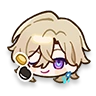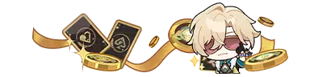 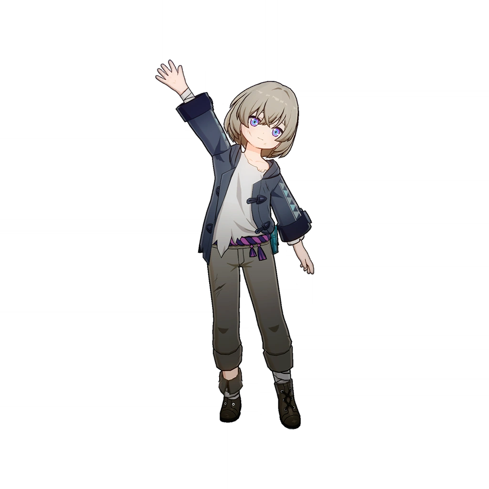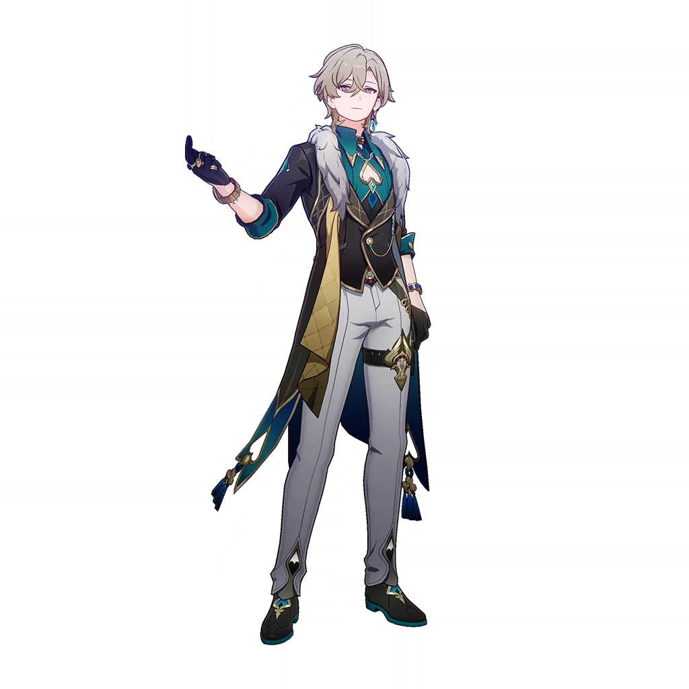 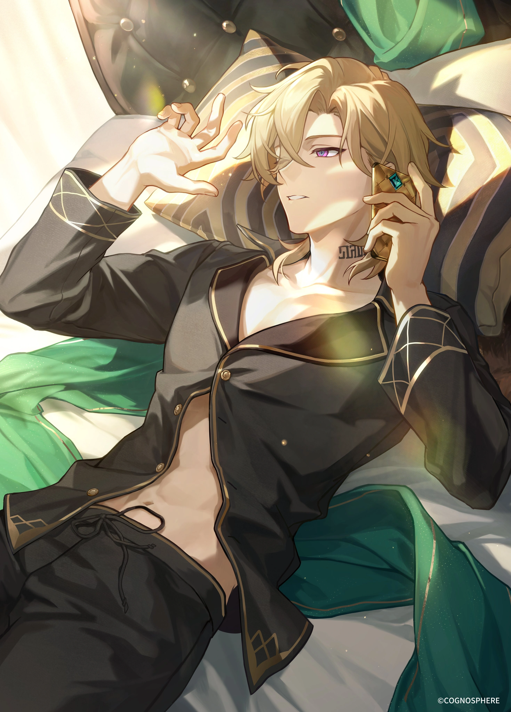